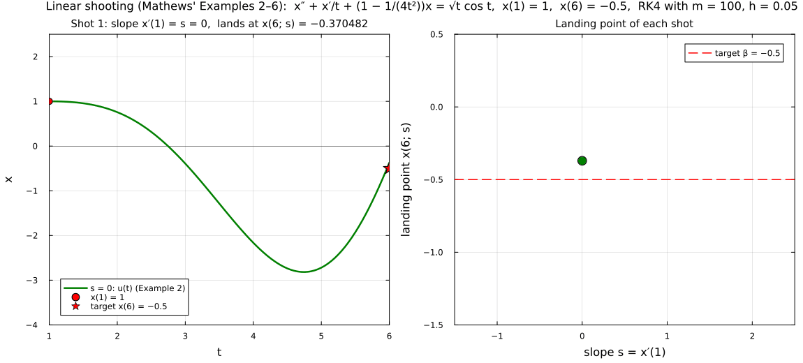
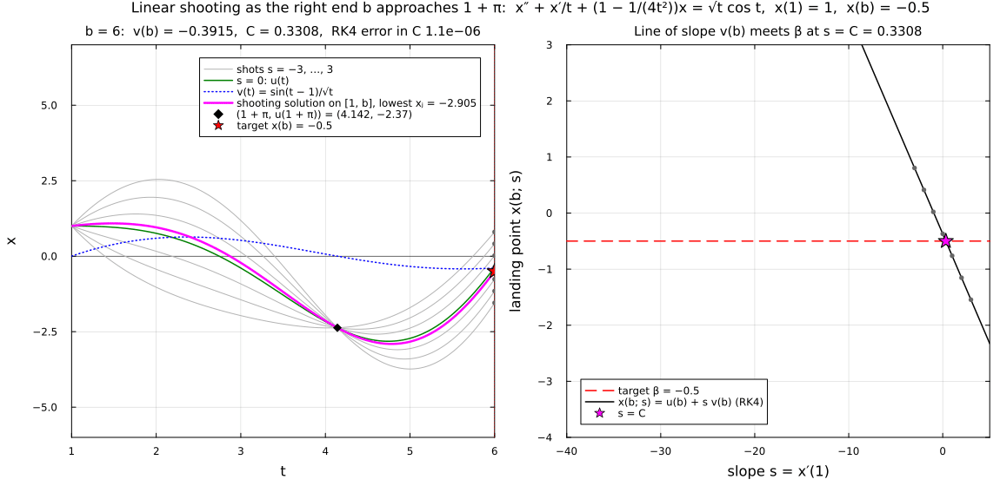

Shooting Methods for ODE’s
Source inspiration: (Mathew 2000-2019).
Description
A boundary value problem asks for a solution of a second-order differential equation \(x'' = f(t, x, x')\) on an interval \(a \le t \le b\) whose values are prescribed at both ends, \(x(a) = \alpha\) and \(x(b) = \beta\). The numerical methods for initial value problems cannot be used directly, because they need \(x(a)\) and the slope \(x'(a)\), and the slope is unknown. A shooting method guesses the missing slope \(s = x'(a)\), solves the initial value problem from \(t = a\) like firing a shot from a cannon at angle \(s\), sees where the shot lands at \(t = b\), and corrects \(s\) until it lands on the target value \(\beta\).
For a linear equation \(x'' = p(t)\,x' + q(t)\,x + r(t)\) no trial and error is needed. Two initial value problems are solved, one for \(u(t)\) with \(u(a) = \alpha\), \(u'(a) = 0\) and one for \(v(t)\) (without the term \(r(t)\)) with \(v(a) = 0\), \(v'(a) = 1\). Every solution that starts at \(\alpha\) is then \(u(t) + s\,v(t)\), and the one that ends at \(\beta\) is
\[ x(t) = u(t) + \frac{\beta - u(b)}{v(b)}\, v(t), \qquad v(b) \ne 0 . \]
Mathews solves both initial value problems with the fourth-order Runge–Kutta method and works one example from start to finish: \(x'' + \tfrac{1}{t} x' + \bigl(1 - \tfrac{1}{4t^2}\bigr) x = \sqrt{t}\cos t\) on \([1, 6]\) with \(x(1) = 1\) and \(x(6) = -0.5\). That equation can also be solved in closed form, so every number below is checked against the exact solution.
Animations
Each animation below solves Mathews’ boundary value problem (7) by linear shooting, frame by frame. The left panel is the graph Mathews draws for his examples, on \(1 \le t \le 6\) and in his colours: \(u\) green, \(v\) blue and the solution of the boundary value problem magenta. The exact solution of Example 6 is dashed black (Cases 1 and 2), and red marks the boundary values (in Case 3, the target \(x(b) = -0.5\)). The right panel is new. In Cases 1 and 3 it plots the landing point \(x(b; s) = u(b) + s\,v(b)\) of the shot against its slope \(s = x'(1)\), a straight line that meets the target \(\beta = -0.5\) at \(s = C\). In Case 2 it plots the error \(\lvert x_j - x(t_j) \rvert\) at the nodes on a logarithmic scale. Like Mathews, the scripts compute \(u\) and \(v\) with Runge2D, the classical fourth-order Runge–Kutta method, with \(m = 100\) steps unless the case says otherwise, in double precision; the exact solutions of Example 6 are evaluated in 256-bit arithmetic. A curve that leaves the window is cut at its edge, and its true extreme value is given in the legend or title. Each frame is shown for two seconds, and the last for six.
Mathews’ module links no animation, and his animation archive has none for shooting methods or boundary value problems, so all three animations are new, with no Mathews original. Case 1 animates the graphs of his Examples 2 to 6 (\(u\), \(v\), both together, the shooting solution and the exact solution), Case 2 the convergence table of Example 5, and Case 3 follows up the remark under Example 3 that linear shooting would fail at \(b = 1 + \pi\); its right ends other than \(b = 6\) are new. Not animated are Example 1, which identifies \(p\), \(q\) and \(r\) and has no graph, and the algebra of Example 6 (Mathematica’s complex form of the solution and the linear system for \(c_1\) and \(c_2\)), whose result is the exact solution drawn in Cases 1 and 2. The counterexample \(x'' = -x\) on \([0, \pi]\) is not animated either; Case 3 shows the same failure, \(v(b) = 0\), for equation (7).
Julia source scripts that generated these animations are linked under each case.
Case 1 — Shots with slopes \(s = 0, 1, -1, 2\) and \(C\) (Examples 2–6), \(m = 100\), \(h = 0.05\)
Behavior: The first shot, \(s = 0\), is \(u\) and lands at \(u_{100} = -0.370482\); the second, \(s = 1\), lands at \(-0.761962\), and the difference of the two is \(v_{100} = -0.391479\). Because the landing point \(u_{100} + s\,v_{100}\) is a straight-line function of \(s\), the shots \(s = -1\) and \(s = 2\) land on the line through the first two, at \(0.0209968\) and \(-1.15344\). That line crosses \(\beta = -0.5\) at \(s = C = 0.3308413669\) (the exact slope is \(0.3308424899\)), and the shot with this slope lands on the target; at the scale of the picture it cannot be told apart from the exact solution. All the shots cross near \(t = 1 + \pi \approx 4.142\), where \(v = 0\) (Case 3 is about this point).

Case 2 — Refining the step, \(m = 25, 50, 100, 200, 400\) (Example 5)
Behavior: The nodes \((t_j, x_j)\) lie on the exact solution at every \(m\); the right panel shows how close. The error is zero at both ends, where \(x_0 = 1\) and \(x_m = -0.5\) hold exactly in double precision, and largest near \(t \approx 2.2\) to \(2.3\). It falls from \(1.54 \times 10^{-4}\) at \(t = 2.2\) for \(m = 25\) to \(2.56 \times 10^{-9}\) at \(t = 2.275\) for \(m = 400\), and each doubling of \(m\) divides the largest error by \(15.2\), \(15.7\), \(15.8\) and \(15.9\), ratios that increase toward \(2^4 = 16\) (the table of Example 5). In the interior the error changes sign once, between \(t = 3.8\) and \(t = 4\), which is the notch in each curve. The computed slope \(C\) approaches the exact \(0.3308424899\): \(0.3305760489\), \(0.3308249263\), \(0.3308413669\), \(0.3308424190\), \(0.3308424855\).

Case 3 — Right end \(b\) approaching \(1 + \pi\) (Example 3), \(b = 6, 5, 4.6, 4.4, 4.25, 4.2, 4.16, 4.15, 4.145, 1 + \pi\)
Behavior: Here equation (7) is solved on \([1, b]\) with \(x(1) = 1\) and \(x(b) = -0.5\); only \(b = 6\) is Mathews’ problem. The shots \(x(t; s) = u(t) + s\,v(t)\) do not depend on \(b\), so the fan of shots \(s = -3, \ldots, 3\) is the same in every frame and only the target moves. Since \(v(1 + \pi) = 0\), every shot passes through the point \((1 + \pi, u(1 + \pi)) = (4.142, -2.3696)\). As \(b\) moves toward \(1 + \pi\), \(|v(b)|\) falls from \(0.3915\) to \(0.001674\), the landing points crowd together and the landing line flattens, and the slope that hits the target grows, from \(C = 0.3308\) at \(b = 6\) and \(-6.558\) at \(b = 5\) to \(-1120\) at \(b = 4.145\). The solution plunges with it: its lowest value is \(-2.905\) at \(b = 6\), \(-6.688\) at \(b = 4.6\), where it first leaves the window, and \(-712.3\) at \(b = 4.145\). The Runge–Kutta error in \(C\) grows at every frame from \(b = 5\) on, from \(9.0 \times 10^{-8}\) to \(4.7 \times 10^{-3}\), although the step \(h = (b - 1)/100\) shrinks: the magnification described under “A small \(v(b)\)”. At \(b = 1 + \pi\) (the double-precision number nearest it) every shot lands at \(u(1 + \pi) = -2.3696\) and none at \(-0.5\), so the problem has no solution. Runge2D does not notice: its \(v_{100} = 7.06 \times 10^{-9}\) is Runge–Kutta error, not \(0\), and the formula returns \(C = 2.648 \times 10^{8}\) and a “solution” whose largest value is \(1.686 \times 10^{8}\), a list of meaningless numbers. In the left panel the fan, \(u\), \(v\), the gray landing points at \(b\) and the black diamond are drawn from the exact formulas of Example 6, and the left title gives the exact \(v(b)\) and \(C\) and the Runge–Kutta error in \(C\) (in the last frame, \(v(b) = 0\) and the exact \(u(1 + \pi)\)); the magenta solution, its legend and the right panel use the Runge2D values.

Boundary Value Problems
A boundary value problem is a differential equation
\[ x'' = f(t, x, x') \qquad \text{for } a \le t \le b \tag{1} \]
together with the boundary conditions
\[ x(a) = \alpha \qquad \text{and} \qquad x(b) = \beta . \tag{2} \]
Before any numerical scheme is applied, it should be checked that a solution exists; otherwise the program prints a list of meaningless numbers. The notation \(y = x'(t)\) is used below to name the third variable of \(f(t, x, x')\).
Assume that \(f(t, x, y)\) is continuous on the region \(R = \{(t, x, y) : a \le t \le b,\ -\infty < x < \infty,\ -\infty < y < \infty\}\) and that \(\partial f/\partial x = f_x(t, x, y)\) and \(\partial f/\partial y = f_y(t, x, y)\) are continuous on \(R\). If there is a constant \(M > 0\) for which
\[ f_x(t, x, y) > 0 \quad \text{and} \quad |f_y(t, x, y)| \le M \qquad \text{for all } (t, x, y) \in R, \]
then the boundary value problem \(x'' = f(t, x, x')\) with \(x(a) = \alpha\) and \(x(b) = \beta\) has a unique solution \(x = x(t)\) for \(a \le t \le b\).
The special case of a linear differential equation deserves its own statement.
Assume that \(f\) in the theorem has the form \(f(t, x, y) = p(t)\,y + q(t)\,x + r(t)\) and that \(f\) and its partial derivatives \(f_x = q(t)\) and \(f_y = p(t)\) are continuous on \(R\). If
\[ q(t) > 0 \qquad \text{for all } t \in [a, b], \]
then the linear boundary value problem
\[ x'' = p(t)\,x'(t) + q(t)\,x(t) + r(t) \qquad \text{with } x(a) = \alpha \text{ and } x(b) = \beta \tag{3} \]
has a unique solution \(x = x(t)\) over \(a \le t \le b\).
The bound on \(f_y = p(t)\) needs no separate check in the corollary: a continuous \(p\) on the closed interval \([a, b]\) is bounded, with \(M = \max_{a \le t \le b} |p(t)|\).
Take \(x'' = -x\), whose general solution is \(x(t) = c_1 \cos t + c_2 \sin t\), with the boundary conditions \(x(0) = \alpha\) and \(x(\pi) = \beta\). The first condition gives \(c_1 = \alpha\) and the second gives \(-c_1 = \beta\), so the problem can be solved only if \(\beta = -\alpha\), and then it has infinitely many solutions \(\alpha\cos t + c_2 \sin t\). (Mathews writes the condition as \(\alpha = \beta\); since \(\cos \pi = -1\) it is \(\beta = -\alpha\).) Here \(q(t) = -1 < 0\), and this counterexample is why the theory is phrased with \(q(t) > 0\). But the condition is only sufficient. Many problems with \(q(t) < 0\) have exactly one solution and can be solved by shooting, Mathews’ example below among them; the method just has to be used with care, because it may fail.
Reduction to Two Initial Value Problems: Linear Shooting
The linear structure of (3) lets the boundary value problem be split into two initial value problems. Let \(u(t)\) be the unique solution of
\[ u'' = p(t)\,u'(t) + q(t)\,u(t) + r(t) \qquad \text{with } u(a) = \alpha \text{ and } u'(a) = 0, \tag{4} \]
and let \(v(t)\) be the unique solution of the homogeneous problem
\[ v'' = p(t)\,v'(t) + q(t)\,v(t) \qquad \text{with } v(a) = 0 \text{ and } v'(a) = 1. \tag{5} \]
For any constant \(C\) the combination \(x(t) = u(t) + C\,v(t)\) solves the differential equation in (3), because
\[ x'' = u'' + C v'' = p(t)\,u' + q(t)\,u + r(t) + p(t)\,C v' + q(t)\,C v = p(t)\,x' + q(t)\,x + r(t). \]
It also satisfies \(x(a) = u(a) + C\,v(a) = \alpha\) for every \(C\). Choosing \(C\) so that \(x(b) = u(b) + C\,v(b) = \beta\) gives the solution of the boundary value problem.
If \(v(b) \ne 0\), the solution of (3) is
\[ x(t) = u(t) + \frac{\beta - u(b)}{v(b)}\, v(t). \tag{6} \]
Why it is called shooting
The solution of (3) with initial values \(x(a) = \alpha\) and \(x'(a) = s\) is \(x(t; s) = u(t) + s\,v(t)\), since both sides solve the same initial value problem. So the constant \(C\) in (6) is the initial slope, \(x'(a) = C\). A shot fired with slope \(s = 0\) is \(u(t)\) and lands at \(u(b)\); a shot with slope \(s = 1\) lands at \(u(b) + v(b)\). Because the landing point \(x(b; s) = u(b) + s\,v(b)\) is a straight-line function of \(s\), the straight line through these two shots hits the target \(\beta\) exactly, at \(s = (\beta - u(b))/v(b)\). When \(f\) is not linear, \(x(b; s)\) is no longer a straight-line function of \(s\), and in general the slope must be found by solving \(x(b; s) - \beta = 0\) iteratively, for instance with the secant method, one initial value problem per shot. Mathews’ module treats only the linear case.
When linear shooting works
What a computation really needs is that two linearly independent solutions \(u\) and \(v\) can be computed and that \(v(b) \ne 0\). (Mathews states this with \(\alpha \ne \beta\) as a premise; formula (6) needs \(v(b) \ne 0\) whatever \(\alpha\) and \(\beta\) are.) The following general fact, which follows from the argument above, explains the role of \(v(b)\).
Let \(p\), \(q\) and \(r\) be continuous on \([a, b]\), and let \(u\) and \(v\) be the solutions of (4) and (5). Every solution of the differential equation in (3) with \(x(a) = \alpha\) has the form \(u(t) + s\,v(t)\) with \(s = x'(a)\). Hence
- if \(v(b) \ne 0\), the boundary value problem (3) has exactly one solution, given by (6);
- if \(v(b) = 0\), it has no solution when \(\beta \ne u(b)\) and infinitely many when \(\beta = u(b)\).
The counterexample above is the case \(v(b) = 0\): for \(x'' = -x\) on \([0, \pi]\), \(v(t) = \sin t\) and \(v(\pi) = 0\), while \(u(t) = \alpha \cos t\) and \(u(\pi) = -\alpha\).
In general, formula (6) divides by \(v(b)\), and when \(v(b)\) is close to zero, the errors made in computing \(u(b)\) and \(v(b)\) are magnified in \(C\) and in the whole computed solution, so a small \(|v(b)|\) is a warning that the problem is close to one without a unique solution.
Algorithm
To approximate the solution of (3) over \([a, b]\) with the Runge–Kutta method of order 4, write each initial value problem as a system of two first-order equations.
Step 1. Solve for \(u\) with \(y = u'\):
\[ \begin{aligned} u' &= y(t), & u(a) &= \alpha, \\ y' &= p(t)\,y(t) + q(t)\,u(t) + r(t), & y(a) &= u'(a) = 0 . \end{aligned} \]
Step 2. Solve for \(v\) with \(z = v'\):
\[ \begin{aligned} v' &= z(t), & v(a) &= 0, \\ z' &= p(t)\,z(t) + q(t)\,v(t), & z(a) &= v'(a) = 1 . \end{aligned} \]
Mathews’ subroutine Runge2D solves a system \(\mathbf{Z}' = \mathbf{F}(t, \mathbf{Z})\) with \(\mathbf{Z} = (x, y)\) using \(m\) steps of size \(h = (b - a)/m\) at the nodes \(t_j = a + jh\):
\[ \begin{aligned} \mathbf{k}_1 &= h\,\mathbf{F}(t_j, \mathbf{Z}_j), & \mathbf{k}_2 &= h\,\mathbf{F}\bigl(t_j + \tfrac{h}{2}, \mathbf{Z}_j + \tfrac12\mathbf{k}_1\bigr), \\ \mathbf{k}_3 &= h\,\mathbf{F}\bigl(t_j + \tfrac{h}{2}, \mathbf{Z}_j + \tfrac12\mathbf{k}_2\bigr), & \mathbf{k}_4 &= h\,\mathbf{F}(t_j + h, \mathbf{Z}_j + \mathbf{k}_3), \end{aligned} \qquad \mathbf{Z}_{j+1} = \mathbf{Z}_j + \tfrac16(\mathbf{k}_1 + 2\mathbf{k}_2 + 2\mathbf{k}_3 + \mathbf{k}_4). \]
Step 3. With \(u_j \approx u(t_j)\) and \(v_j \approx v(t_j)\) from the two runs on the same nodes, form
\[ x_j = u_j + \frac{\beta - u_m}{v_m}\, v_j, \qquad j = 0, 1, \ldots, m . \]
The points \((t_j, x_j)\) approximate the solution. By construction \(x_0 = \alpha\) and \(x_m = \beta\) (up to rounding), whatever the accuracy of the runs; the error shows in the interior.
Worked Examples
All six of Mathews’ examples treat the same boundary value problem,
\[ x'' + \frac{1}{t}\,x' + \left(1 - \frac{1}{4t^2}\right) x = \sqrt{t}\,\cos t \qquad \text{over } [1, 6], \qquad x(1) = 1.0, \quad x(6) = -0.5 . \tag{7} \]
Example 1 — Is the equation linear?
Problem. Is (7) a linear differential equation? Identify \(p(t)\), \(q(t)\) and \(r(t)\).
Solution. Solving (7) for \(x''\) gives
\[ x'' = -\frac{1}{t}\,x'(t) - \left(1 - \frac{1}{4t^2}\right) x(t) + \sqrt{t}\,\cos t . \]
It is linear: \(x\) and \(x'\) appear only to the first power, multiplied by functions of \(t\) alone. In the form (3),
\[ \boxed{\ p(t) = -\frac{1}{t}, \qquad q(t) = -\left(1 - \frac{1}{4t^2}\right), \qquad r(t) = \sqrt{t}\,\cos t\ } \]
All three are continuous on \([1, 6]\). But \(q(t) < 0\) on the whole interval: \(1/(4t^2) \le 1/4\) for \(t \ge 1\), and \(q\) decreases from \(q(1) = -3/4\) to \(q(6) = -143/144 \approx -0.993056\). So the corollary does not apply. That does not matter for the computation: as Mathews notes, the solution can still be computed provided \(v(6) \ne 0\), and Example 3 finds that it is.
Example 2 — The first function \(u(t)\)
Problem. Use linear shooting on (7) and solve for \(u(t)\).
Step 1 (the system): with \(y = u'\),
\[ \begin{aligned} u' &= y, & u(1) &= 1, \\ y' &= \left(-1 + \frac{1}{4t^2}\right) u - \frac{y}{t} + \sqrt{t}\,\cos t, & y(1) &= u'(1) = 0 . \end{aligned} \]
Step 2 (Runge–Kutta): Mathews runs Runge2D with \(m = 100\) steps, so \(h = (6 - 1)/100 = 0.05\), from \((u, y) = (1, 0)\) at \(t = 1\).
Result. The last node gives
\[ u(6) \approx u_{100} = -0.370482 . \]
This agrees with Mathews’ output. The exact value, from the closed form in Example 6, is \(u(6) = -0.3704820481\); the Runge–Kutta value is \(-0.3704824638\), and over all 101 nodes \(|u_j - u(t_j)| \le 4.2 \times 10^{-7}\).
Example 3 — The second function \(v(t)\)
Problem. Use linear shooting on (7) and solve for \(v(t)\).
Step 1 (the system): with \(z = v'\) and no \(r(t)\) term,
\[ \begin{aligned} v' &= z, & v(1) &= 0, \\ z' &= \left(-1 + \frac{1}{4t^2}\right) v - \frac{z}{t}, & z(1) &= v'(1) = 1 . \end{aligned} \]
Step 2 (Runge–Kutta): Runge2D with the same \(m = 100\) and \(h = 0.05\), from \((v, z) = (0, 1)\).
Result.
\[ v(6) \approx v_{100} = -0.391479 \ne 0, \]
in agreement with Mathews’ output, so (6) can be used: “we are in luck”, as Mathews says.
Verification. For this equation \(v\) is known exactly. The functions \(\cos t/\sqrt{t}\) and \(\sin t/\sqrt{t}\) solve the homogeneous equation (see Example 6), and the combination with \(v(1) = 0\), \(v'(1) = 1\) is
\[ v(t) = \frac{\sin(t - 1)}{\sqrt{t}}, \qquad v(6) = \frac{\sin 5}{\sqrt 6} = -0.3914791958 . \]
The Runge–Kutta value is \(-0.3914792683\), and over all 101 nodes \(|v_j - v(t_j)| \le 7.3 \times 10^{-8}\). The exact form also shows where the luck lies: \(v(b) = \sin(b - 1)/\sqrt{b}\) vanishes exactly when \(b - 1\) is a multiple of \(\pi\). On \([1, 6]\), \(v\) changes sign once, at \(t = 1 + \pi \approx 4.1416\), but \(v(6) \ne 0\) because \(5\) is not a multiple of \(\pi\). Had the right end been \(b = 1 + \pi\), linear shooting would have failed.
Example 4 — Neither \(u\) nor \(v\) solves the boundary value problem
Problem. Show that neither of the solutions in Examples 2 and 3 satisfies the boundary conditions, although each satisfies its own initial conditions \(u(1) = 1\), \(u'(1) = 0\) and \(v(1) = 0\), \(v'(1) = 1\).
Solution. Mathews graphs the two functions to see this. The Runge–Kutta values at the integer nodes are:
| \(t\) | \(u_j \approx u(t)\) | \(v_j \approx v(t)\) |
|---|---|---|
| 1 | 1.000000 | 0.000000 |
| 2 | 0.757506 | 0.595010 |
| 3 | −0.392397 | 0.524983 |
| 4 | −2.163055 | 0.070560 |
| 5 | −2.719635 | −0.338452 |
| 6 | −0.370482 | −0.391479 |
The function \(u\) starts at the right value, \(u(1) = 1\), but ends at \(u(6) = -0.370482\), not at \(-0.5\). The function \(v\) ends at \(-0.391479\) and starts at \(v(1) = 0\), not at \(1\). Neither satisfies both boundary conditions of (7); what is needed is the right combination of the two.
Example 5 — The solution of the boundary value problem
Problem. Form the solution of (7).
Step 1 (the constant): with \(\beta = -0.5\), \(u(b) \approx u_{100}\) and \(v(b) \approx v_{100}\),
\[ C = \frac{\beta - u_{100}}{v_{100}} = \frac{-0.5 - (-0.3704824638)}{-0.3914792683} = 0.3308413669 . \]
This \(C\) is the computed initial slope \(x'(1)\); the exact slope is \(0.3308424899\).
Step 2 (the combination): at every node,
\[ x_j = u_j + 0.3308413669\, v_j , \qquad j = 0, 1, \ldots, 100 . \]
Result. The first point is \(x(1) = 1\) and the last is \(x(6) = -0.5\), as Mathews prints. The solution rises from \(1\) to a maximum of \(1.0861\) near \(t = 1.4828\), crosses zero near \(t = 2.8711\), falls to a minimum of \(-2.9057\) near \(t = 4.7825\), and then climbs to \(-0.5\) at \(t = 6\) (the extrema and the zero are those of the exact solution of Example 6).
Verification. The table compares \(x_j\) with the exact solution \(x(t)\) of Example 6.
| \(t\) | \(x_j\) (shooting, \(h = 0.05\)) | exact \(x(t)\) | \(x_j - x(t)\) |
|---|---|---|---|
| 1 | 1.000000 | 1.000000 | 0 |
| 2 | 0.954360 | 0.954361 | \(-6.2 \times 10^{-7}\) |
| 3 | −0.218711 | −0.218711 | \(-4.7 \times 10^{-7}\) |
| 4 | −2.139711 | −2.139711 | \(4.8 \times 10^{-8}\) |
| 5 | −2.831609 | −2.831610 | \(3.1 \times 10^{-7}\) |
| 6 | −0.500000 | −0.500000 | 0 |
Over all 101 nodes the largest error is \(6.5 \times 10^{-7}\), at \(t = 2.25\). The end values are exact (up to rounding) by construction. Repeating the computation with other numbers of steps shows the fourth-order behaviour of the Runge–Kutta method: each halving of \(h\) divides the largest error by close to \(2^4 = 16\).
| \(m\) | \(h\) | largest \(\lvert x_j - x(t_j) \rvert\) | ratio to the previous row |
|---|---|---|---|
| 25 | 0.2 | \(1.54 \times 10^{-4}\) | — |
| 50 | 0.1 | \(1.01 \times 10^{-5}\) | 15.2 |
| 100 | 0.05 | \(6.47 \times 10^{-7}\) | 15.7 |
| 200 | 0.025 | \(4.08 \times 10^{-8}\) | 15.8 |
| 400 | 0.0125 | \(2.56 \times 10^{-9}\) | 15.9 |
Example 6 — The analytic solution
Problem. Find the analytic solution of (7).
Step 1 (a substitution): put \(x(t) = w(t)/\sqrt{t}\). A direct computation gives
\[ x'' + \frac{1}{t}\,x' + \left(1 - \frac{1}{4t^2}\right) x = \frac{w'' + w}{\sqrt{t}}, \]
so (7) becomes \(w'' + w = t \cos t\). (Equation (7) is Bessel’s equation of order \(\tfrac12\) with a forcing term, which is why this substitution works.)
Step 2 (general solution): the homogeneous equation \(w'' + w = 0\) has the solutions \(\cos t\) and \(\sin t\), and \(w_p = \tfrac14\left(t\cos t + t^2 \sin t\right)\) satisfies \(w_p'' + w_p = t\cos t\). Hence
\[ x(t) = \frac{1}{\sqrt{t}}\left( c_1 \cos t + c_2 \sin t + \frac{t \cos t + t^2 \sin t}{4} \right). \tag{8} \]
Mathematica’s DSolve returns the same family written with the complex exponentials \(e^{\pm i t}/\sqrt{t}\), which is why, as Mathews remarks, this real equation appears to have a solution “involving complex numbers”; by Euler’s formula it is the real family (8), and its particular part differs from \(w_p/\sqrt{t}\) only by the homogeneous term \(-\sin t/(8\sqrt{t})\).
Step 3 (boundary conditions): \(x(1) = 1\) and \(\sqrt{6}\,x(6) = -\sqrt{6}/2\) give the linear system
\[ \begin{aligned} c_1 \cos 1 + c_2 \sin 1 &= 1 - \tfrac14(\cos 1 + \sin 1) = 0.654556677, \\ c_1 \cos 6 + c_2 \sin 6 &= -\tfrac{\sqrt 6}{2} - \tfrac14(6\cos 6 + 36 \sin 6) = -0.150260818 . \end{aligned} \]
Its determinant is \(\cos 1 \sin 6 - \sin 1 \cos 6 = \sin 5 = -0.958924 \ne 0\), the same \(\sin 5\) that makes \(v(6) = \sin 5/\sqrt{6}\) nonzero in Example 3. By Cramer’s rule,
\[ \boxed{\ c_1 = 0.0588713452, \qquad c_2 = 0.7400710958\ } \]
and the exact solution of (7) is (8) with these constants. Its slope at the left end is \(x'(1) = 0.3308424899\), the slope \(C\) that linear shooting approximates in Example 5.
Verification. Substituting (8) into (7) symbolically leaves a residual of \(0\) for every \(c_1\) and \(c_2\); with the constants above, \(x(1) = 1\) and \(x(6) = -0.5\). The functions \(u\) and \(v\) of Examples 2 and 3 come from the same formula: \(v(t) = \sin(t - 1)/\sqrt{t}\), and \(u\) is (8) with \(c_1 = 0.3372657010\) and \(c_2 = 0.5613161356\), which give \(u(1) = 1\), \(u'(1) = 0\) and \(u(6) = -0.3704820481\). The exact solution also satisfies \(x = u + C v\) with the exact \(C = (-0.5 - u(6))/v(6) = 0.3308424899\), which confirms formula (6) on this problem.